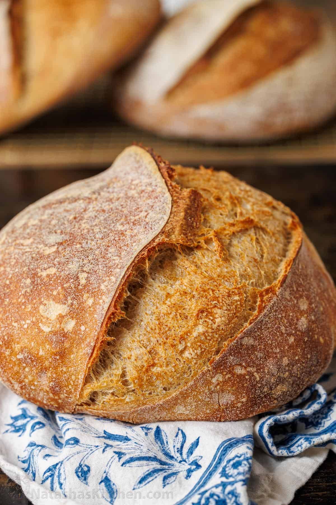

Home
How to do Sourdough Bread
Preparation
Step 1
For a single loaf, mix 50g of starter with 50g of bread flour and 50g of lukewarm water (up to 85 degrees) in a 3/4 qt jar or larger. Scrape the sides of the jar, loosely cover, and mark the height on the outside of the jar with a rubber band or dry-erase marker. Let sit at room temperature for 4-6 hours or until it has more than doubled in volume.
Step 2
In a large bowl, whisk the flours and salt until mixed. Add the water and active starter and stir using a wooden spoon then use your hands until thoroughly mixed. It will be a wet and sticky dough. Scrape down the sides of the bowl and cover with a clean kitchen towel.
Step 3
Rest the dough for a total of 4 hours, performing a stretch and fold routine after every hour. Stretch and fold: Wet your hands so the dough doesn’t stick. Stretch or pull up gently on one side of the dough without tearing it. Then fold it over itself, turn the bowl a quarter turn and repeat the stretch on the other 3 sides until all 4 sides are stretched. Cover and repeat each hour for 4 total stretches. It will be tougher to stretch towards the end as the dough develops.
Step 4
After the 4th stretch and fold, lightly flour your work surface to shape the dough. Flour your hands, turn the dough out onto the surface, and gently stretch and shape the sourdough bread for your cooking pot.
Step 5
Let the dough rest for 20 minutes. First, turn the dough seam-side down. Then cover with a towel. After 20 minutes, if it seems to have loosened up too much, gently re-shape it using the same process as above.
Step 6
Flour your hands and cup the outsides of the dough. Then tuck the sides of the dough underneath. Slide the dough down the counter in a circular motion about 6 inches, using its slight stickiness to tighten the ball/oval. Don’t over-flour your surface and try not to tear the dough.
Step 7
Flour the banneton proofing basket, or tea-towel-lined bowl generously. Place the dough inside seam-side up and cover with a towel. Refrigerate overnight or for at least 8 hours. It can stay refrigerated for up to 48 hours until you’re ready to bake the sourdough bread. It will rise slightly but won’t double.
Step 8
Preheat the oven to 500 degrees and set the pot inside to preheat at the same time. This may take 30 minutes or up to 60 minutes for some ovens. If using a combo cooker with low sides, cut a piece of parchment to cover the bottom. I recently discovered that using a bread sling prevents too much browning on the bottom and it’s easier to transfer in and out of the pot. If using a Dutch Oven with higher sides, lay a piece of parchment (or bread sling) on the counter. Put the Dutch oven/combo cooker into your oven to heat (without the parchment) at least 30 minutes before baking. Optional: Set a pizza stone on the bottom rack, if using (a pizza stone helps to keep the bottom of the bread from getting too dark).
Step 9
Remove the dough from the fridge. If using a combo cooker, place the parchment circle into the hot pan, and turn out the dough into the hot pot seam-side-down. If using a Dutch oven, turn the dough out on the parchment paper. Using the bread lame (A curved lame works best to get the distinctive ear) or a serrated knife, make a crescent shape cut from the base of one side of the dough to the base of the dough. Keep the blade at a 45-degree angle to the dough and cut 1/3 to 1/2″ deep (it’s ok to go over it a second time, just be confident).
Step 10
If using a Dutch oven, lift the parchment paper to place the dough (on the parchment) into the Dutch oven. Using hot mitts, cover the Dutch oven/combo cooker with the hot lid and place it into the oven. Reduce the heat to 450 degrees and bake for 20 minutes to allow the trapped steam to cook the crust of the bread. Then, remove the lid and bake uncovered for 20-25 minutes or until golden brown. Transfer the finished sourdough bread to a cooling rack and cool completely before cutting.
Credits to Natasha Kravchuk
Finished product 